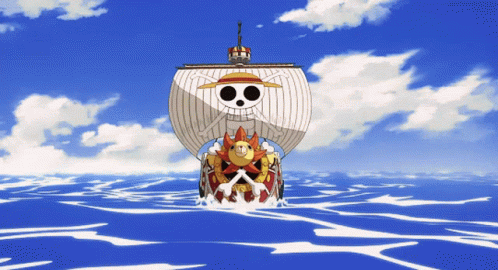

A little about how I got into One Piece
Ever since I was a kid I have enjoyed watching anime. The first anime I had ever watch was probably pokemon. I remember watching One Piece for the first time when I was around ten years old. It would play every day after school and I loved it. Unfortuantly, it stopped airing maybe 150 episodes into the show. I wouldn't pick it up again till streaming services started getting popular and cruncyroll was created. Cruncyroll is a fantastic one stop shop for streaming anime. I was eventually able to catch up with the anime (all 800 episodes) and couldn't wait for more. That is when I started reading the source material for the anime. The One Piece manga which if you don't know a manga is a japanese comic book. I can tell you I lost no enjoyment going from watching the show to just reading it. The author does an amazing job fleshing out the world and its characters. I think my favorite part about One Piece is that every character whether its the main or side characters all get their time to shine. It truly is an amazing well thought out world and adventure.
What is One Piece?
One Piece is a Manga written and illustrated by Eiichiro Oda. One Piece's first issue was published in 1997 and is now over one thousands issues long selling over 490 million copies worldwide. One Piece is about a grand adventure following a boy named Luffy who wants to find the One Piece treasure to become the new pirate king. In order to do this he has to gather crew members and sail the vast world. Read more about One Piece!
Author

Eiichiro Oda is a highly successful Japanese manga artist and the creator of the popular series "One Piece". Born on January 1, 1975, in Kumamoto, Japan, Oda has been interested in drawing and storytelling since a young age. After winning several awards for his manga works, he began publishing "One Piece" in Weekly Shōnen Jump magazine in 1997. The series has since become a global phenomenon, with over 100 million tankōbon volumes sold and an anime adaptation that has been airing for over 20 years. Oda is known for his colorful and imaginative storytelling, memorable characters, and sense of humor, which have made "One Piece" one of the most beloved manga series of all time.
